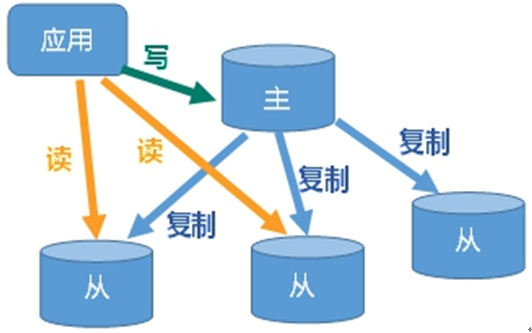
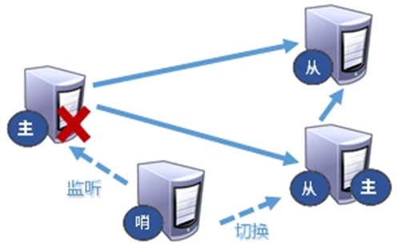

1 NoSql数据库简介 1.1 nosql数据库的引入 1.1.1 技术的分类 目前我们学过很多技术，比如：
1、解决功能性的问题：JavaSE、Jsp、servlet、Tomcat、HTML、Linux、JDBC、SVN
2、解决扩展性的问题：Struts、Spring、SpringMVC、Hibernate、Mybatis
3、解决性能的问题：NoSQL、Java线程、Hadoop、Nginx、MQ、ElasticSearch
我们开发一个项目，无论这个项目的业务多么复杂，无外乎就是增删改查的操作。而这些功能我们要实现，通过解决功能性的问题的技术栈 就可以轻松实现。但是项目的功能不可能一成不变，项目功能会随着需求的变化不而不断的增加、修改和升级。这个时候我们就需要对项目的功能进行扩展和增强，但是对项目进行扩展和增强我们需要不影响原有代码的前提下进行，此时我们可以使用解决扩展性的问题的技术栈(框架) 进行操作。为什么框架能够解决程序的扩展性问题呢?因为框架定义了一定的约束和规范，我们只需要按照这些约束和规范进行开发就可以解决项目的扩展性问题。
现在我们再思考一个问题，项目开发完成之后，受众用户可能会有很多。随着用户量的不断增加，此时我们需要解决项目的性能问题。今天我们学习的nosql技术就是为了解决项目性能问题的。当然解决项目性能问题的技术栈还有很多，比如多线程技术、Nginx、MQ、ElasticSearch等。
1.1.2 web的发展过程
在Web1.0的时代，由于数据访问量很有限，用一夫当关的高性能的单点服务器可以解决大部分问题。
随着Web2.0的时代的到来，用户访问量大幅度提升，同时产生了大量的用户数据。加上后来的智能移动设备的普及，所有的互联网平台都面临了巨大的性能挑战。
我们需要解决两个问题，第一个是CPU及内存的压力，第二个是IO压力。
由于一台web服务器不能应对海量用户的访问。我们可以考虑对web服务器进行冗余部署，可以根据用户的访问量部署多台。再通过Nginx对用户的访问进行负载均衡操作，将用户的访问压力分摊在不同的web服务器上。
这样操作又会遇到一个问题，就是session问题。解决session的方案也有很多。
方案1：比如我们可以把session里面的数据存放在cookie端，以后用户每次发送请求，都可以携带cookie里面的数据到服务器。但由于cookie存放在浏览器端，如果数据是敏感数据，存放在cookie会不安全。
方案2：session复制。将某台服务器里面的session复制一份到其他服务器里面去。这种方案也有缺点，就是把相同的session数据存放在不同的web服务器中，容易造成数据冗余，服务器空间的浪费。
方案3：设置缓存数据库，将session信息存放在缓存数据库里面，缓存数据库里面的数据被所有web服务器共享。并且缓存数据库中的数据存放在内存中，读写速度也非常快。
随着项目数据的日积月累，数据库里面的数据也越来越庞大。加上用户访问量的增大，我们直接访问数据库获取数据会对数据库造成非常大的IO压力。如何解决?
方案1：考虑对数据库进行读写分离，水平拆分、垂直拆分。但是这种方式会破坏一定的业务规则。
方案2：将频繁查询的数据，放在缓存，以后我们只需要从缓存里获取数据即可，减少对数据库的访问压力。
1.2 nosql数据库的基本概述 1.2.1 什么是nosql数据库 NoSQL(NoSQL = Not Only SQL )，意即“不仅仅是SQL”，泛指非关系型的数据库 。 NoSQL 不依赖业务逻辑方式存储，而以简单的key-value模式存储。因此大大的增加了数据库的扩展能力。nosql数据库有以下特点：
不遵循SQL标准。
不支持ACID。
远超于SQL的性能。
那么nosql有哪些适用场景呢?
对数据高并发的读写
海量数据的读写
对数据高可扩展性的
当然nosql也有不适用的场景:
需要事务支持
基于sql的结构化查询存储，处理复杂的关系,需要sql查询。
1.2.2 常见的nosql数据库
Memcache很早出现的NoSql数据库， 数据都在内存中，一般不持久化。 支持简单的key-value模式，支持类型单一。一般是作为缓存数据库辅助持久化的数据库
redis几乎覆盖了Memcached的绝大部分功能,数据都在内存中，支持持久化， 主要用作备份恢复。 除了支持简单的key-value模式，还支持多种数据结构 的存储，比如 list、set、hash、zset等。一般是作为缓存数据库辅助持久化的数据库。
MongoDB 高性能、开源、模式自由(schema free)的文档型数据库(类似于json) 。数据都在内存中， 如果内存不足，把不常用的数据保存到硬盘。虽然是key-value模式，但是对value（尤其是json ）提供了丰富的查询功能。MongoDB支持二进制数据及大型对象。
我们通过https://db-engines.com/en/ranking。查看最新的数据库排名 :
1.2.3 redis的诞生历史 08年的时候有一个意大利西西里岛的小伙子，笔名antirez (htp:/linvece.org!)，创建了一个访客信息网站LLOOGG.COM。有的时候我们需要知道网站的访问情况，比如访客的IP、操作系统、浏览器、使用的搜索关键词、所在地区、访问的网页地址等等。在国内，有很多网站提供了这个功能，比如CNZZ，百度统计，国外也有谷歌的GoogleAnalytics。我们不用自己写代码去实现这个功能，只需要在全局的footer里面嵌入一段JS代码就行了，当页面被访问的时候，就会自动把访客的信息发送到这些网站统计的服务器，然后我们登录后台就可以查看数据了。
2 redis的概述和安装 2.1 redis的概述
Redis是一个开源的key-value存储系统。
和Memcached类似，它支持存储的value类型相对更多，包括string(字符串)、list(链表)、set(集合)、zset(sorted set —有序集合)和hash（哈希类型）。
这些数据类型都支持push/pop、add/remove及取交集并集和差集及更丰富的操作，而且这些操作都是原子性的。
在此基础上，Redis支持各种不同方式的排序。
与memcached一样，为了保证效率，数据都是缓存在内存中。
区别的是Redis会周期性的把更新的数据写入磁盘或者把修改操作写入追加的记录文件。
并且在此基础上实现了master-slave(主从)同步。
基于这些特性，redis的使用场景非常广泛：
场景
解决方案
获取最新数据
通过List实现按自然时间排序的数据
排行榜
利用Zset有序集合
时效性的数据，比如手机验证码
Expire过期
计数器、秒杀
原子性 自增方法INCR DECR
去除大量数据中的重复数据
利用Set集合
构建队列
List集合
发布订阅消息系统
pub/sub模式
2.2 redis的安装 我们可以在官网上下载redis。redis的官网:https://redis.io。
我的百度云了redis的安装包，大家可以在百度云里面自行下载：：
1 2 链接：https://pan.baidu.com/s/1AXUsqV4js6Nw4ARObZDmqA
里面分别是linux版本，windows版本和压缩包版本
2.2.1 前期准备
linux操作系统：
windows操作系统：
redis安装包：Redis-x64-3.0.504.msi
2.2.2 安装步骤 linux操作系统： 1 2 3 4 5 6 7 8 [qgc@qgc-virtual-machine opt]~$ gcc --version # 通过查看gcc版本，查看本机linux系统里面是否安装gcc工具
这一步就是想办法把你的redis安装包上传到linux上，有人用的ssh可视化工具，这个仁者见仁智者见智，我用的ssh的scp，步骤如下：
1）linux端用ifconfig命令查看网络,（inet 地址： ……… 就是我们要连接的ip）
1 2 3 4 5 6 7 8 9 10 11 12 13 14 15 16 17 18 qgc@qgc-virtual-machine:~$ ifconfig
如上192.168.84.128就是我们要连接的ip
2）window端使用scp：
找到自己的redis安装包地址，如我的是：”C:\Users\Administrator\Desktop\\学习\个人学习\redis\redis软件\redis-6.2.1.tar.gz”
然后具体操作如下：
1 2 3 4 5 PS C:\Windows\System32\WindowsPowerShell\v1.0> 输入# scp "C:\Users\Administrator\Desktop\\学习\个人学习\redis\redis软件\redis-6.2.1.tar.gz" qgc@192.168.84.128:
至此安装包上传完毕。
解压redis安装包
1 2 3 4 5 qgc@qgc-virtual-machine:~$ tar -zxvf redis-6.2.1.tar.gz
注意：如果没有准备好C语言编译环境，make 会报错—Jemalloc/jemalloc.h：没有那个文件
解决方案: 先准备好gcc环境，然后执行如下命令：
1 2 qgc@qgc-virtual-machine:~$ make distclean # 清除执行编译的c文件
进入redis安装目录，执行make指令进行编译
1 2 qgc@qgc-virtual-machine:~$ cd redis-6.2.1/
完成后最后输出如图：
编译之后，执行安装命令
1 2 3 4 5 6 7 8 9 10 11 12 13 qgc@qgc-virtual-machine:~$ sudo make install
注意：安装成功之后，默认的安装目录是/usr/local/bin 。我们可以去查看具体的安装详情：
1 2 3 4 5 6 7 8 9 10 11 qgc@qgc-virtual-machine:~$ cd /usr/local/bin
这里我们简单了解这几个文件的用途：
redis-benchmark:性能测试工具，可以在自己本子运行，看看自己本子性能如何
redis-check-aof：修复有问题的AOF文件，rdb和aof后面讲
redis-check-dump：修复有问题的dump.rdb文件
redis-sentinel：Redis集群使用
redis-server：Redis服务器启动命令
redis-cli：客户端，操作入口
window安装 直接双击Redis-x64-3.0.504.msi文件，然后一直下一步就可以啦！！！
2.3 redis启动 2.3.1 redis前台启动(不推荐) 前台启动，命令行窗口不能关闭，否则服务器停止。
1 qgc@qgc-virtual-machine:~$ redis-server
2.3.2 redis后台启动(推荐)
进入redis的解压目录，拷贝一份redis.conf配置文件到redis安装目录
1 2 3 4 qgc@qgc-virtual-machine:~$ cd redis-6.2.1/
编辑redis.conf配置文件，后台启动设置daemonize no改成yes
1 qgc@qgc-virtual-machine:~$ vim redis.conf
1 2 3 4 qgc@qgc-virtual-machine:~$ redis-server redis.conf
1 2 3 qgc@qgc-virtual-machine:~$ redis-cli # 使用redis自带客户端连接redis
1 2 3 qgc@qgc-virtual-machine:~$ redis-cli shutdown # 关闭redis服务
关闭错误参考文档：
Redis关闭服务错误——(error) ERR Errors trying to SHUTDOWN. Check logs._、以吾之名的博客-CSDN博客
如果reids是多实例，，也可以指定端口关闭：redis-cli -p 6379 shutdown
开放redis端口号6379的远程访问权限
修改配置文件注释掉如下内容
关闭本地防护：
改前：
改后：
1 2 3 4 5 6 qgc@qgc-virtual-machine:~$ firewall-cmd --permanent --add-port=6379/tcp
至于视图工具参考（我用的Navicat16）：
Navicat最新162激活破解 - 山石木水 - 博客园 (cnblogs.com)
连接成功如图
2.4 redis的相关知识
6379在是手机按键上MERZ对应的号码，而MERZ取自意大利歌女Alessia Merz的名字。
Alessia Merz 是一位意大利舞女、女演员。 Redis 作者 Antirez 早年看电视节目，觉得 Merz 在节目中的一些话愚蠢可笑，Antirez 喜欢造“梗”用于平时和朋友们交流，于是造了一个词 “MERZ”，形容愚蠢，与 “stupid” 含义相同。MERZ长期以来被Redis作者antirez及其朋友当作愚蠢的代名词。
后来 Antirez 重新定义了 “MERZ” ，形容”具有很高的技术价值，包含技艺、耐心和劳动，但仍然保持简单本质“。
到了给 Redis 选择一个数字作为默认端口号时，Antirez 没有多想，把 “MERZ” 在手机键盘上对应的数字 6379 拿来用了。
默认16个数据库，类似数组下标从0开始，初始默认使用0号库。使用命令 select <dbid>来切换数据库。如: select 8 。dbsize查看当前数据库的key的数量。flushdb清空当前库。
多路复用是指使用一个线程来检查多个文件描述符（Socket）的就绪状态，比如调用select和poll函数，传入多个文件描述符，如果有一个文件描述符就绪，则返回，否则阻塞直到超时。得到就绪状态后进行真正的操作可以在同一个线程里执行，也可以启动线程执行（比如使用线程池）
memcached：串行 vs 多线程+锁
redis: 单线程+多路IO复用(Redis)
3 redis常用数据类型操作 3.1 redis基于key(键)的操作 1 2 3 4 5 6 7 8 9 10 11 12 13 14 15 16 17 18 19 20 21 22 23 24 25 26 27 28 29 30 31 32 33 34 35 36 37 127.0.0.1:6379> keys * # 查看当前数据库中所有的key值
3.2 redis中string的操作 3.2.1 redis中string的介绍 String是Redis最基本的类型，你可以理解成与Memcached一模一样的类型，一个key对应一个value。String类型是二进制安全的。意味着Redis的string可以包含任何数据。比如jpg图片或者序列化的对象。String类型是Redis最基本的数据类型，一个Redis中字符串value最多可以是512M。
3.2.2 redis中string的常用命令 1 2 3 4 5 6 7 8 9 10 11 12 13 14 15 16 17 18 19 20 21 22 23 24 25 26 27 28 29 30 31 32 33 34 35 36 37 38 39 40 41 42 127.0.0.1:6379> keys *
注意:
incr命令是原子操作。 也就是指不会被线程调度机制打断的操作。这种操作一旦开始，就一直运行到结束，中间不会有任何线程上下文切换。在单线程中， 能够在单条指令中完成的操作都可以认为是”原子操作”。
问题：
Java中的i++属于原子性操作吗? 不是
1 2 3 4 i++; 不是原子操作
i = 0，两个线程对i分别进行i++100次。值是多少?(2-200)
首先在两个线程互不干扰的情况下，分别对i++执行，一个线程执行完再执行另一个线程，这样就会使i自增200次，即最终为200，这是理想状态下的互不干涉，最坏情况则为，第一个线程执行了99次，当A线程的i++执行到99次时，此时cpu1寄存器中值为99，内存为99
当B线程cpu2寄存器的1，写回内存覆盖内存的99，变成1
如果可以这样，那A线程也可以同样再覆盖一次B线程，最终结果就是2。
redis操作string的其他命令：
1 2 3 4 5 6 7 8 9 10 11 12 13 14 15 16 17 18 19 20 21 22 23 24 25 26 27 28 29 30 31 32 33 127.0.0.1:6379> mset k1 v1 k2 v2 k3 v3 # 批量设置k-v
3.3 redis中list的操作 List列表是单键多值的列表。Redis 列表是简单的字符串列表，按照插入顺序排序。你可以添加一个元素到列表的头部（左边）或者尾部（右边）。它的底层实际是个双向链表，对两端的操作性能很高，但是通过索引下标操作中间的节点性能会较差。
3.3.1 list的常用命令 1 2 3 4 5 6 7 8 9 10 11 12 13 14 15 16 17 18 19 20 21 22 23 24 25 26 27 28 29 30 31 32 33 34 35 36 37 38 39 40 41 42 43 44 45 46 47 48 49 50 51 52 53 54 55 56 57 58 59 60 61 62 63 64 65 66 67 127.0.0.1:6379> lpush k1 v1 v2 v3 # 从列表的左边追加元素 键是k1 值是v1 v2 v3
3.3.2 list的数据结构 List的数据结构为快速链表quickList。
首先在列表元素较少的情况下会使用一块连续的内存存储，这个结构是ziplist，也即是压缩列表。它将所有的元素紧挨着一起存储，分配的是一块连续的内存。
当数据量比较多的时候才会改成quicklist。
因为普通的链表需要的附加指针空间太大，会比较浪费空间。比如这个列表里存的只是int类型的数据，结构上还需要两个额外的指针prev和next。
Redis将链表和ziplist结合起来组成了quicklist。也就是将多个ziplist使用双向指针串起来使用。这样既满足了快速的插入删除性能，又不会出现太大的空间冗余。
3.4 redis中的set操作 Redis set对外提供的功能与list类似是一个列表的功能，特殊之处在于set是可以自动去重 的，当你需要存储一个列表数据，又不希望出现重复数据时，set是一个很好的选择，并且set提供了判断某个成员是否在一个set集合内的命令，这个也是list所不能提供的。
Redis的Set是string类型的无序集合。它底层其实是一个value为null的hash表，所以添加，删除，查找的复杂度都是 O(1) 。(随着数据的增加，执行时间的长短，如果是O(1)，数据增加，查找数据的时间不变)
3.4.1 set的常用命令 1 2 3 4 5 6 7 8 9 10 11 12 13 14 15 16 17 18 19 20 21 22 23 24 25 26 27 28 29 30 31 32 33 34 35 36 37 38 39 40 41 42 43 44 45 46 47 48 49 50 51 52 53 54 55 127.0.0.1:6379> sadd s1 v1 v2 v3 # 向s1中添加元素 v1 v2 v3
3.4.2 set的数据结构 Set数据结构是dict字典，字典是用哈希表实现的。
Java中HashSet的内部实现使用的是HashMap，只不过所有的value都指向同一个对象。Redis的set结构也是一样，它的内部也使用hash结构，所有的value都指向同一个内部值。
3.5 redis中的hash操作 Redis hash 是一个键值对集合。Redis hash是一个string类型的field和value的映射表，hash特别适合用于存储对象。类似Java里面的Map
需求：在redis里面保存一个用户对象( {id:1001,username:”eric”,age=23} )。
方案1：
将user对象转换成一个json字符串，使用string来存储这个json字符串。
缺点：每次修改这个对象里面的数据，都需要把这个字符串转换成java对象修改，修改之后再转换成json字符串，比较麻烦，不适合频繁修改数据的场景。
方案2：
通过key和对象属性拼接的方式存储数据:
1 2 3 4 key value
缺点：存储的数据分散，如果对象的属性过多，在redis中的key也会非常的多。
方案3：
通过redis中的hash类型的数据保存
优点：通过 key(用户ID) + field(属性标签) 就可以操作对应属性数据了，既不需要重复存储数据，也不会带来序列化和并发修改控制的问题。
3.5.1 hash的常用命令 1 2 3 4 5 6 7 8 9 10 11 12 13 14 15 16 17 18 19 20 21 22 23 24 25 26 27 28 29 30 31 32 33 34 35 127.0.0.1:6379> hset user id 1001 # 向hash中存储数据 key是user field是id 值是1001
3.5.2 hash的数据结构 Hash类型对应的数据结构是两种：ziplist（压缩列表），hashtable（哈希表）。当field-value长度较短且个数较少时，使用ziplist，否则使用hashtable。
3.6 redis中 的zset操作 Redis有序集合zset与普通集合set非常相似，是一个没有重复元素的字符串集合。不同之处是有序集合的每个成员都关联了一个评分（score）,这个评分（score）被用来按照从最低分到最高分的方式排序集合中的成员。集合的成员是唯一的，但是评分可以是重复了。
因为元素是有序的, 所以你也可以很快的根据评分（score）或者次序（position）来获取一个范围的元素。访问有序集合的中间元素也是非常快的,因此你能够使用有序集合作为一个没有重复成员的智能列表。
3.6.1 zset的常用命令 1 2 3 4 5 6 7 8 9 10 11 12 13 14 15 16 17 18 19 20 21 22 23 24 25 26 27 28 29 30 31 32 33 34 35 36 37 38 39 40 41 42 43 44 45 46 47 48 127.0.0.1:6379> zadd user 99 kobe 88 durant 82 curry # 添加元素到zset集合中
3.6.2 zset的数据结构 zset底层使用了两个数据结构：
（1）hash，hash的作用就是关联元素value和权重score，保障元素value的唯一性，可以通过元素value找到相应的score值。
（2）跳跃表，跳跃表的目的在于给元素value排序，根据score的范围获取元素列表。
什么是跳跃表?
有序集合在生活中比较常见，例如根据成绩对学生排名，根据得分对玩家排名等。对于有序集合的底层实现，可以用数组、平衡树、链表等。数组不便元素的插入、删除；平衡树或红黑树虽然效率高但结构复杂；链表查询需要遍历所有效率低。Redis采用的是跳跃表。跳跃表效率堪比红黑树，实现远比红黑树简单。
实例：
对比有序链表和跳跃表，从链表中查询出51。
要查找值为51的元素，需要从第一个元素开始依次查找、比较才能找到。共需要6次比较。
从第2层开始，1节点比51节点小，向后比较。
21节点比51节点小，继续向后比较，后面就是NULL了，所以从21节点向下到第1层
在第1层，41节点比51节点小，继续向后，61节点比51节点大，所以从41向下
在第0层，51节点为要查找的节点，节点被找到，共查找4次。
从此可以看出跳跃表比有序链表效率要高。
4 redis配置文件的介绍 4.1 数据单位配置 配置大小单位,开头定义了一些基本的度量单位，只支持bytes。
4.2 INCLUDES配置
我们可以把一些配置信息定义在子配置文件里面，再在redis.conf中引入进来。
4.3 网络相关的配置 4.3.1 bind 默认情况bind=127.0.0.1只能接受本机的访问请求。不写的情况下，无限制接受任何ip地址的访问。
生产环境肯定要写你应用服务器的地址；服务器是需要远程访问的，所以需要将其注释掉。
如果开启了protected-mode，那么在没有设定bind ip且没有设密码的情况下，Redis只允许接受本机的响应。
保存配置，停止服务，重启启动查看进程，不再是本机访问了。
4.3.2 protected-mode
将本机访问保护模式设置no。这样其他机器就可以远程连接redis。
4.3.3 port redis的默认端口号：6379
4.3.4 tcp-backlog
设置tcp的backlog，backlog其实是一个连接队列，backlog队列总和=未完成三次握手队列 + 已经完成三次握手队列。
在高并发环境下你需要一个高backlog值来避免慢客户端连接问题。
注意Linux内核会将这个值减小到/proc/sys/net/core/somaxconn的值（128），所以需要确认增大/proc/sys/net/core/somaxconn和/proc/sys/netipv4/tcp_max_syn_backlog（128）两个值来达到想要的效果。
4.3.5 timeout 一个空闲的客户端维持多少秒会关闭，0表示关闭该功能。即永不关闭。
4.3.6 tcp-keepalive 对访问客户端的一种心跳检测，每隔n秒检测一次。
单位为秒，如果设置为0，则不会进行Keepalive检测，默认值为300。
4.4 GENERAL通用配置 4.4.1 daemonize 是否为后台进程，设置为yes，守护进程，后台启动。
4.4.2 pidfile
存放pid文件的位置，每个实例会产生一个不同的pid文件。
4.4.3 loglevel 指定日志记录级别，Redis总共支持四个级别：debug、verbose、notice、warning，默认为notice
4.4.4 logfile 日志文件的名称。
4.4.5 databases 设定库的数量 默认16，默认数据库为0，可以使用SELECT <dbid>命令在连接上指定数据库id。
4.5 SECURITY安全配置 4.5.1 设置密码
如果想要设置密码访问redis，需要进行如下配置:
1 2 3 4 5 6 7 8 9 127.0.0.1:6379> config get requirepass
4.6 LIMITS配置 4.6.1 maxclients maxclients：设置redis同时可以与多少个客户端进行连接。 默认情况下为10000个客户端。如果达到了此限制，redis则会拒绝新的连接请求，并且向这些连接请求方发出“max number of clients reached”以作回应。
4.6.2 maxmemory 建议必须设置 ，否则，将内存占满，造成服务器宕机。
设置redis可以使用的内存量。一旦到达内存使用上限，redis将会试图移除内部数据，移除规则可以通过maxmemory-policy来指定。
如果redis无法根据移除规则来移除内存中的数据，或者设置了“不允许移除”，那么redis则会针对那些需要申请内存的指令返回错误信息，比如SET、LPUSH等。
但是对于无内存申请的指令，仍然会正常响应，比如GET等。如果你的redis是主redis（说明你的redis有从redis），那么在设置内存使用上限时，需要在系统中留出一些内存空间给同步队列缓存，只有在你设置的是“不移除”的情况下，才不用考虑这个因素。
4.6.3 maxmemory-policy
volatile-lru：使用LRU算法移除key，只对设置了过期时间的键；（最近最少使用）
allkeys-lru：在所有集合key中，使用LRU算法移除key
volatile-random：在过期集合中移除随机的key，只对设置了过期时间的键
allkeys-random：在所有集合key中，移除随机的key
volatile-ttl：移除那些TTL值最小的key，即那些最近要过期的key
noeviction：不进行移除。针对写操作，只是返回错误信息
5 redis的发布和订阅
1 2 3 4 5 6 [qgc@qgc-virtual-machine]~$ redis-cli
1 2 3 [qgc@qgc-virtual-machine]~$ redis-cli
6 redis的新的数据类型 6.1 Bitmap(位图) 现在我们来看一个场景，就是各大app都有签到的功能，大家可以思考，用户签到的功能是如何实现的。首先想到的就是设计一张签到表，将用户的签到信息持久化的保存在数据表里面。我们可以设计这么一张表：
用户一次签到，就是一条记录,然后将记录持久化的保存在数据表里面。大家设想一下这么个场景：假如有1000万用户，平均每人每年签到次数为10次，则这张表一年的数据量为 1亿条。每签到一次需要使用（8 + 8 + 1 + 1 + 3 + 1）共22 字节的内存，一个月则最多需要600多字节。可以想象到1000万用户一年的数据量需要的内存空间该有多大。
我们如何能够简化一点呢？其实可以考虑小时候一个挺常见的方案，就是小时候，咱们准备一张小小的卡片，你只要签到就打上一个勾，我最后判断你是否签到，其实只需要到小卡片上看一看就知道了
我们可以采用类似这样的方案来实现我们的签到需求。
我们按月来统计用户签到信息，签到记录为1，未签到则记录为0.
把每一个bit位对应当月的每一天，形成了映射关系。用0和1标示业务状态，这种思路就称为位图（BitMap）。这样我们就用极小的空间，来实现了大量数据的表示
Redis中是利用string类型数据结构实现BitMap，因此最大上限是512M，转换为bit则是 2^32个bit位。
BitMap的操作命令有：
SETBIT：向指定位置（offset）存入一个0或1
GETBIT ：获取指定位置（offset）的bit值
BITCOUNT ：统计BitMap中值为1的bit位的数量
BITFIELD ：操作（查询、修改、自增）BitMap中bit数组中的指定位置（offset）的值
BITFIELD_RO ：获取BitMap中bit数组，并以十进制形式返回
BITOP ：将多个BitMap的结果做位运算（与 、或、异或）
BITPOS ：查找bit数组中指定范围内第一个0或1出现的位置
1 2 3 4 5 6 7 8 9 10 11 12 127.0.0.1:6379> setbit bit1 0 1 # 向指定的位置存入值
最后得到的结果是:
1 2 3 4 5 6 7 8 9 10 11 12 13 14 15 16 17 18 19 20 21 22 23 24 25 26 27 28 29 30 127.0.0.1:6379> getbit bit1 1 # 从指定位置获取值
6.2 HyperLogLog 6.2.1 HyperLogLog简介 在工作当中，我们经常会遇到与统计相关的功能需求，比如统计网站PV（PageView页面访问量）,可以使用Redis的incr、incrby轻松实现。
但像UV（UniqueVisitor，独立访客）、独立IP数、搜索记录数等需要去重和计数的问题如何解决？这种求集合中不重复元素个数的问题称为基数问题。
解决基数问题有很多种方案：
（1）数据存储在MySQL表中，使用distinct count计算不重复个数
（2）使用Redis提供的hash、set、bitmaps等数据结构来处理
以上的方案结果精确，但随着数据不断增加，导致占用空间越来越大，对于非常大的数据集是不切实际的。
能否能够降低一定的精度来平衡存储空间？Redis推出了HyperLogLog
Redis HyperLogLog 是用来做基数统计的算法，HyperLogLog 的优点是，在输入元素的数量或者体积非常非常大时，计算基数所需的空间总是固定的、并且是很小的。
在 Redis 里面，每个 HyperLogLog 键只需要花费 12 KB 内存，就可以计算接近 2^64 个不同元素的基数。这和计算基数时，元素越多耗费内存就越多的集合形成鲜明对比。
但是，因为 HyperLogLog 只会根据输入元素来计算基数，而不会储存输入元素本身，所以 HyperLogLog 不能像集合那样，返回输入的各个元素。
什么是基数?
比如数据集 {1, 3, 5, 7, 5, 7, 8}， 那么这个数据集的基数集为 {1, 3, 5 ,7, 8}, 基数(不重复元素)为5。 基数估计就是在误差可接受的范围内，快速计算基数。
6.2.2 命令操作 1 2 3 4 5 6 7 8 9 10 11 12 13 14 15 16 17 18 19 20 127.0.0.1:6379> pfadd subject java # 添加元素
6.3 Geospatial 6.3.1 Geospatial简介 Redis 3.2 中增加了对GEO类型的支持。GEO，Geographic，地理信息的缩写。该类型，就是元素的2维坐标，在地图上就是经纬度。redis基于该类型，提供了经纬度设置，查询，范围查询，距离查询，经纬度Hash等常见操作。
6.3.2 命令操作 1 2 3 4 5 6 7 8 9 10 11 12 13 14 15 16 17 127.0.0.1:6379> geoadd china:city 121.47 31.23 shanghai #存数据
注意：两极(南极 北极)无法直接添加，一般会下载城市数据，直接通过 Java 程序一次性导入。有效的经度从 -180 度到 180 度。有效的纬度从 -85.05112878 度到 85.05112878 度。当坐标位置超出指定范围时，该命令将会返回一个错误。已经添加的数据，是无法再次往里面添加的。
7 redis的事务操作 Redis事务是一个单独的隔离操作：事务中的所有命令都会序列化、按顺序地执行。事务在执行的过程中，不会被其他客户端发送来的命令请求所打断。Redis事务的主要作用就是串联多个命令防止别的命令插队。
7.1 事务的基本操作 7.1.1 redis事务命令的使用
使用案例：
1 2 3 4 5 6 7 8 9 10 11 12 13 14 15 127.0.0.1:6379> multi # 开启事务
1 2 3 4 5 6 7 8 9 10 11 12 13 14 15 16 17 18 127.0.0.1:6379> flushdb
7.1.2 事务的错误处理
组队中某个命令出现了报告错误(组队时出现错误)，执行时整个的所有队列都会被取消。
1 2 3 4 5 6 7 8 9 10 11 12 13 14 15 16 127.0.0.1:6379> multi
组队中(入列时)命令没有问题，在执行的时候出了问题，则只有报错的命令不会被执行，而其他的命令都会执行，不会回滚。
1 2 3 4 5 6 7 8 9 10 11 12 13 14 15 127.0.0.1:6379> multi
7.2 事务的冲突 7.2.1 事务冲突出现的场景 想想一个场景：有很多人有你的账户,同时去参加双十一抢购
假设你有一个账户，此时你有三个女友(A B C)都知道你账户，现在她们拿着你的银行账户同时进行消费。
一个请求想给金额减8000；一个请求想给金额减5000；一个请求想给金额减1000
7.2.2 解决事务的冲突问题
悲观锁(Pessimistic Lock) , 顾名思义，就是很悲观，每次去拿数据的时候都认为别人会修改，所以每次在拿数据的时候都会上锁，这样别人想拿这个数据就会block直到它拿到锁。传统的关系型数据库里边就用到了很多这种锁机制 ，比如行锁 ，表锁 等，读锁 ，写锁 等，都是在做操作之前先上锁。
乐观锁(Optimistic Lock), 顾名思义，就是很乐观，每次去拿数据的时候都认为别人不会修改，所以不会上锁，但是在更新的时候会判断一下在此期间别人有没有去更新这个数据，可以使用版本号等机制。乐观锁适用于多读的应用类型，这样可以提高吞吐量 。Redis就是利用这种check-and-set机制实现事务的。
7.2.3 使用watch命令实现redis乐观锁 在执行multi之前，先执行watch key1 [key2],可以监视一个(或多个) key ，如果在事务执行之前这个(或这些) key 被其他命令所改动，那么事务将被打断。
现在我们使用两个客户端来演示redis的乐观锁
在客户端1 设置一个balance，然后watch这个key
1 2 3 4 127.0.0.1:6379> set balance 100 # 设置账户余额信息 100
1 2 127.0.0.1:6379> watch balance # 使用watch指令监控这个key值
在客户端1开启事务，并修改账户余额信息，但是不提交事务
1 2 3 4 127.0.0.1:6379> multi
在客户端2开启事务，并修改账户余额信息，但是不提交事务
1 2 3 4 127.0.0.1:6379> multi
1 2 3 4 127.0.0.1:6379(TX)> exec
1 2 3 4 127.0.0.1:6379(TX)> exec # 事务中的命令没有被执行，因为客户端2监控的key值发生了变化
7.2.4 redis事务的特性
单独的隔离操作
事务中的所有命令都会序列化、按顺序地执行。事务在执行的过程中，不会被其他客户端发送来的命令请求所打断。
没有隔离级别的概念
队列中的命令没有提交之前都不会实际被执行，因为事务提交前任何指令都不会被实际执行。
不保证原子性
事务中如果有一条命令执行失败，其后的命令仍然会被执行，没有回滚 。
8 redis持久化操作
Redis 提供了2个不同形式的持久化方式。
RDB（Redis DataBase）
AOF（Append Of File）
8.1 RDB持久化 8.1.1 什么是RDB持久化 在指定的时间间隔内将内存中的数据集快照写入磁盘， 也就是行话讲的Snapshot快照，它恢复时是将快照文件直接读到内存里。
8.1.2 RDB持久化流程 Redis会单独创建（fork）一个子进程来进行持久化，会先将数据写入到 一个临时文件中，待持久化过程都结束了，再用这个临时文件替换上次持久化好的文件。 整个过程中，主进程是不进行任何IO操作的，这就确保了极高的性能 如果需要进行大规模数据的恢复，且对于数据恢复的完整性不是非常敏感，那RDB方式要比AOF方式更加的高效。RDB的缺点是最后一次持久化后的数据可能丢失。
8.1.3 RDB持久化触发策略 RDB 持久化提供了两种触发策略：一种是手动触发，另一种是自动触发。
手动触发是通过SAVE命令或者BGSAVE命令将内存数据保存到磁盘文件+中。如下所示：
save：会阻塞当前Redis服务器，直到持久化完成，线上应该禁止使用 。
bgsave：该触发方式会fork一个子进程，由子进程负责持久化过程，因此阻塞只会发生在fork子进程的时候。
1 2 3 4 5 6 127.0.0.1:6379> SAVE
自动触发策略，是指 Redis 在指定的时间内，数据发生了多少次变化时，会自动执行BGSAVE命令。自动触发的条件包含在了 Redis 的配置文件中，如下所示：
上图所示， save m n 的含义是在时间 m 秒内，如果 Redis 数据至少发生了 n 次变化，那么就自动执行BGSAVE命令。配置策略说明如下：
上图所示， save m n 的含义是在时间 m 秒内，如果 Redis 数据至少发生了 n 次变化，那么就自动执行BGSAVE命令。配置策略说明如下：
① save 900 1 表示在 900 秒内，至少更新了 1 条数据，Redis 自动触发 BGSAVE 命令，将数据保存到硬盘。
② save 300 10 表示在 300 秒内，至少更新了 10 条数据，Redis 自动触 BGSAVE 命令，将数据保存到硬盘。
③ save 60 10000 表示 60 秒内，至少更新了 10000 条数据，Redis 自动触发 BGSAVE 命令，将数据保存到硬盘。只要上述三个条件任意满足一个，服务器就会自动执行BGSAVE命令。当然您可以根据实际情况自己调整触发策略。
8.1.4 dump.rdb文件 在redis.conf中配置文件名称，默认为dump.rdb。
rdb文件的保存路径，也可以修改。默认为Redis启动时命令行所在的目录下,我们也可以自定义目录位置。
8.1.5 stop-writes-on-bgsave-error 当Redis无法写入磁盘的话，直接关掉Redis的写操作。推荐yes。
8.1.6 RDB持久化特点
优势：
适合大规模的数据恢复
对数据完整性和一致性要求不高更适合使用
节省磁盘空间
恢复速度快
劣势
Fork的时候，内存中的数据被克隆了一份，大致2倍的膨胀性需要考虑。
虽然Redis在fork时使用了写时拷贝技术 ,但是如果数据庞大时还是比较消耗性能。
l在备份周期在一定间隔时间做一次备份，所以如果Redis意外down掉的话，就会丢失最后一次快照后的所有修改。
8.2 AOF持久化 AOF：append only file
8.2.1 什么是AOF持久化 以日志 的形式来记录每个写操作（增量保存），将Redis执行过的所有写指令记录下来(读操作不记录 )， 只许追加文件但不可以改写文件 ，redis启动之初会读取该文件重新构建数据，换言之，redis 重启的话就根据日志文件的内容将写指令从前到后执行一次以完成数据的恢复工作。
注意：AOF默认不开启。可以在redis.conf中配置文件名称，默认为 appendonly.aof。AOF文件的保存路径，同RDB的路径一致。
AOF和RDB同时开启，系统默认取AOF的数据（数据不会存在丢失）。
8.2.2 AOF持久化规则
始终同步，每次Redis的写入都会立刻记入日志；性能较差但数据完整性比较好
每秒同步，每秒记入日志一次，如果宕机，本秒的数据可能丢失。
redis不主动进行同步，把同步时机交给操作系统。
8.2.3 ReWrite重写机制 AOF采用文件追加方式，文件会越来越大为避免出现此种情况，新增了重写机制, 当AOF文件的大小超过所设定的阈值时，Redis就会启动AOF文件的内容压缩， 只保留可以恢复数据的最小指令集.可以使用命令bgrewriteaof
如何重写?
AOF文件持续增长而过大时，会fork出一条新进程来将文件重写(也是先写临时文件最后再rename)，redis4.0版本后的重写，是指上就是把rdb 的快照，以二级制的形式附在新的aof头部，作为已有的历史数据，替换掉原来的流水账操作。
no-appendfsync-on-rewrite：
如果 no-appendfsync-on-rewrite=yes ,不写入aof文件只写入缓存，用户请求不会阻塞，但是在这段时间如果宕机会丢失这段时间的缓存数据。（降低数据安全性，提高性能）
如果 no-appendfsync-on-rewrite=no, 还是会把数据往磁盘里刷，但是遇到重写操作，可能会发生阻塞。（数据安全，但是性能降低）
触发机制，何时重写？
Redis会记录上次重写时的AOF大小，默认配置是当AOF文件大小是上次rewrite后大小的一倍且文件大于64M时触发
重写虽然可以节约大量磁盘空间，减少恢复时间。但是每次重写还是有一定的负担的，因此设定Redis要满足一定条件才会进行重写。
auto-aof-rewrite-percentage：设置重写的基准值，文件达到100%时开始重写（文件是原来重写后文件的2倍时触发）
auto-aof-rewrite-min-size：设置重写的基准值，最小文件64MB。达到这个值开始重写。
例如：文件达到70MB开始重写，降到50MB，下次什么时候开始重写？100MB
系统载入时或者上次重写完毕时，Redis会记录此时AOF大小，设为base_size,
如果Redis的AOF当前大小>= base_size +base_size*100% (默认)且当前大小>=64mb(默认)的情况下，Redis会对AOF进行重写。
8.2.4 使用AOF持久化流程
（1）bgrewriteaof触发重写，判断是否当前有bgsave或bgrewriteaof在运行，如果有，则等待该命令结束后再继续执行。
（2）主进程fork出子进程执行重写操作，保证主进程不会阻塞。
（3）子进程遍历redis内存中数据到临时文件，客户端的写请求同时写入aof_buf缓冲区和aof_rewrite_buf重写缓冲区保证原AOF文件完整以及新AOF文件生成期间的新的数据修改动作不会丢失。
（4）1).子进程写完新的AOF文件后，向主进程发信号，父进程更新统计信息。2).主进程把aof_rewrite_buf中的数据写入到新的AOF文件。
（5）使用新的AOF文件覆盖旧的AOF文件，完成AOF重写。
8.2.5 AOF持久化特点
优势
备份机制更稳健，丢失数据概率更低。
可读的日志文本，通过操作AOF稳健，可以处理误操作。
劣势
比起RDB占用更多的磁盘空间。
恢复备份速度要慢。
每次读写都同步的话，有一定的性能压力。
8.2.6 用哪个 官方推荐两个都启用。
RDB持久化方式能够在指定的时间间隔能对你的数据进行快照存储
AOF持久化方式记录每次对服务器写的操作,当服务器重启的时候会重新执行这些命令来恢复原始的数据,AOF命令以redis协议追加保存每次写的操作到文件末尾.
Redis还能对AOF文件进行后台重写,使得AOF文件的体积不至于过大
只做缓存：如果你只希望你的数据在服务器运行的时候存在,你也可以不使用任何持久化方式.
同时开启两种持久化方式
在这种情况下,当redis重启的时候会优先载入AOF文件来恢复原始的数据, 因为在通常情况下AOF文件保存的数据集要比RDB文件保存的数据集要完整.
RDB的数据不实时，同时使用两者时服务器重启也只会找AOF文件。那要不要只使用AOF呢？ 建议不要，因为RDB更适合用于备份数据库(AOF在不断变化不好备份)， 快速重启，而且不会有AOF可能潜在的bug，留着作为一个万一的手段。
9 redis主从复制 什么是主从复制?
主机数据更新后根据配置和策略， 自动同步到备机的机制。主机就是master，备机就是slave。
主从复制的机制能干嘛：

9.1 搭建一主多从 如何搭建?
拷贝多个redis.conf文件include(写绝对路径)
开启daemonize yes
Pid文件名字pidfile
指定端口port
Log文件名字
dump.rdb名字dbfilename
appendonly 关掉
9.1.1 搭建步骤
1 2 3 4 5 6 [qgc@qgc-virtual-machine /]~$ mkdir myredis
新建redis6379.conf，在配置文件中定义以下内容
1 [qgc@qgc-virtual-machine myredis]~$ vim redis6379.conf
1 2 3 4 include /myredis/redis.conf
新建redis6380.conf，在配置文件中定义以下内容
1 [qgc@qgc-virtual-machine myredis]~$ vim redis6380.conf
1 2 3 4 include /myredis/redis.conf
新建redis6381.conf，在配置文件中定义以下内容
1 [qgc@qgc-virtual-machine myredis]~$ vim redis6381.conf
1 2 3 4 include /myredis/redis.conf
1 2 3 4 5 6 7 8 [qgc@qgc-virtual-machine myredis]~$ redis-server redis6379.conf
1 2 3 4 5 6 7 8 9 10 11 12 13 14 [qgc@qgc-virtual-machine myredis]~$ redis-cli -p 6379 # 使用客户端连接6379服务器# Replication
1 2 3 4 5 6 7 8 9 10 11 12 13 14 [qgc@qgc-virtual-machine myredis]~$ redis-cli -p 6380 # 使用客户端连接6379服务器# Replication
1 2 3 4 5 6 7 8 9 10 11 12 13 14 [qgc@qgc-virtual-machine myredis]~$ redis-cli -p 6381 # 使用客户端连接6379服务器# Replication
在6380 6380服务器上配置从机角色。6379是主机，不做任何配置。
在redis6380.conf 6381.conf配置文件上配置从机
首选我们关掉redis三台服务器:
1 2 3 [qgc@qgc-virtual-machine]~$ redis-cli -p 6379 shutdown [qgc@qgc-virtual-machine]~$ redis-cli -p 6380 shutdown [qgc@qgc-virtual-machine]~$ redis-cli -p 6381 shutdown
分别在redis6380.conf 6381.conf配置文件中添加： slaveof 127.0.0.1 6379
重启三台redis服务器,查看相关的服务器的运行信息
重启之后，分别查看相关的服务器的运行信息
redis6379:
1 2 3 4 5 6 7 8 9 10 11 12 13 14 15 16 [qgc@qgc-virtual-machine]~$ redis-cli -p 6379 # Replication
redis6380 redis6381:
1 2 3 4 5 6 7 8 9 10 11 12 13 14 15 16 17 18 19 20 21 22 [qgc@qgc-virtual-machine]~$ redis-cli -p 6380 # Replication
在主机上添加数据，在从机上查看：
在redis6379机器上设置数据:
1 2 127.0.0.1:6379> set username eric
在从机redis6380 redis6381上查看数据：
1 2 3 4 127.0.0.1:6380> get username
在从机上写数据，看是否可以写成功。
1 2 3 4 127.0.0.1:6380> set k1 v1
9.1.2 主从复制的原理 首先我们思考几个问题：
(1) 从机挂掉之后，会出现什么情况
我们先停掉redis6381这台机器。
1 2 3 4 5 6 7 8 127.0.0.1:6381> shutdown
接下来我们在主机上新增数据:
1 2 3 4 5 127.0.0.1:6379> set k1 v1
在6380这台从机上能够同步到主机上的最新的数据
1 2 3 127.0.0.1:6380> keys *
接下来我们重启redis6381这台机器。
1 2 3 4 5 6 7 [qgc@qgc-virtual-machine myredis]~$ redis-server redis6381.conf # Replication
接下来我们查看redis6381这台机器上的数据。
1 2 3 127.0.0.1:6381> keys *
(2) 如果主机挂掉之后，是什么情况
我们关闭主机redis6379的服务。
1 2 3 4 5 6 7 8 127.0.0.1:6379> shutdown
此时从机的状态会发生变化吗?
1 2 3 4 5 6 7 8 9 10 11 12 13 127.0.0.1:6380> info replication # 从机6380机器上的状态# Replication # Replication
我们发现，不管主机的状态是什么样，从机的角色永远不会发生变化。
(3) 主从复制的原理
Slave启动成功连接到master后会发送一个sync命令。
Master接到命令启动后台的存盘进程，同时收集所有接收到的用于修改数据集命令， 在后台进程执行完毕之后，master将传送整个数据文件到slave,以完成一次完全同步。
全量复制：而slave服务在接收到数据库文件数据后，将其存盘并加载到内存中。
增量复制：Master继续将新的所有收集到的修改命令依次传给slave,完成同步。
但是只要是重新连接master,一次完全同步（全量复制)将被自动执行。
9.1.3 redis薪火相传和反客为主 9.1.3.1 薪火相传 上一个Slave可以是下一个slave的Master，Slave同样可以接收其他 slaves的连接和同步请求，那么该slave作为了链条中下一个的master, 可以有效减轻master的写压力,去中心化降低风险。
风险是一旦某个slave宕机，后面的slave都没法备份。
现在我们实现薪火相传的效果:
搭建redis6382,注意，redis6382是redis6381的从机。
1 [qgc@qgc-virtual-machine myredis]~$ vim redis6382.conf
1 2 3 4 5 include /myredis/redis.conf
1 2 3 4 5 6 7 [qgc@qgc-virtual-machine myredis]~$ redis-server redis6382.conf #启动redis6382# Replication
我们再查看redis6381的状态：
我们发现redis6380既是从机还是6382的主机。
注意:6381还是只能提供读的服务，不能写数据，它的作用是分担了6379机器数据同步的压力。
9.1.3.2 反客为主 在默认情况下，如果主机挂了，从机的角色不会发生变化，永远都是从机的角色。如果我们想主机挂了之后，从机的角色发生转换，转换成主机，这就叫反客为主。
1 2 127.0.0.1:6379> shutdown
1 2 3 4 5 6 7 127.0.0.1:6380> slaveof no one# Replication
1 2 3 4 5 6 7 8 127.0.0.1:6381> slaveof 127.0.0.1 6380 # 重新指定其主机是6380
9.2 哨兵模式 什么是哨兵模式：
反客为主的自动版 ，能够后台监控主机是否故障，如果故障了根据投票数自动将从节点切换成主节点。

9.2.1 搭建哨兵模式的步骤
其中6379是主节点。6380 6381是从节点。分别启动这三台redis服务。
在myredis目录里面创建一个文件，文件的名称为sentinel.conf 。注意名字必须叫这个。
在sentinel.conf配置文件里面定义如下内容：
1 2 sentinel monitor mymaster 127.0.0.1 6379 1# daemonize yes
其中mymaster为监控对象起的服务器名称， 1 为至少有多少个哨兵同意迁移的数量。
1 [qgc@qgc-virtual-machine myredis]~$ redis-sentinel sentinel.conf
我们可以看到哨兵监控的具体信息:
1 [qgc@qgc-virtual-machine myredis]~$ redis-cli -p 6379 shutdown
我们再看sentinel控制台的输出(此时需要等待一定的时间)，我们可以看到切换主机的一些日志信息：
1 2 3 4 5 6 7 8 9 10 11 12 13 14 15 [qgc@qgc-virtual-machine ~]~$ redis-cli -p 6381# Replication
1 2 3 4 5 6 7 8 [qgc@qgc-virtual-machine myredis]~$ redis-cli -p 6379 shutdown# Replication
现在我们完成了哨兵的配置。
9.2.2 哨兵的选举策略 通过上面的操作，我们指定当从节点挂掉之后，哨兵会选出新的主节点，那么它的选举策略是什么呢?
(1) 选择优先级靠前的。
优先级在redis.conf中默认：replica-priority 100，值越小优先级越高
(2) 选择偏移量最大的。
偏移量是指获得原主机数据最全的。
(3) 选择runid最小的服务。
每个redis实例启动后都会随机生成一个40位的runid。
10 redis集群 10.1 redis集群的基本介绍 首先我们来思考一个问题：
如果redis容量不够了，数据写不进去了，redis如何扩容?
如果redis的并发操作大，redis如何分摊并发压力?
另外，主从模式，薪火相传模式，主机宕机，导致ip地址发生变化，应用程序中配置需要修改对应的主机地址、端口等信息。
之前通过代理主机 来解决，但是redis3.0中提供了解决方案。就是无中心化集群配置。
10.2 搭建redis集群 redis集群有什么特点:
Redis 集群实现了对Redis的水平扩容，即启动N个redis节点，将整个数据库分布存储在这N个节点中，每个节点存储总数据的1/N。
Redis 集群通过分区（partition）来提供一定程度的可用性（availability）： 即使集群中有一部分节点失效或者无法进行通讯， 集群也可以继续处理命令请求。
接下来我们开始redis集群的具体搭建：
创建目录redis-cluster，将之前搭建主从复制的redis.conf拷贝到当前目录。
注意：redis.conf配置文件一定要设置成远程登录，否则搭建集群不成功。
1 2 3 [qgc@qgc-virtual-machine /]~$ mkdir redis-cluster
我们搭建3主3从，所以我们创建6个redis实例。
6个redis实例的端口号分别是6379,6380,6381,6389,6390,6391。
创建redis配置文件redis6379.conf，配置文件里面定义如下:
1 2 3 4 5 6 7 include /redis-cluster/redis.conf
注意：
cluster-enabled yes 打开集群模式
cluster-config-file nodes-6379.conf 设定节点配置文件名
cluster-node-timeout 15000 设定节点失联时间，超过该时间（毫秒），集群自动进行主从切换。
1 2 3 4 5 6 7 8 9 10 11 12 13 [qgc@qgc-virtual-machine redis-cluster]~$ cp redis6379.conf redis6380.conf
可以使用查找并替换的命令来实现
1 2 3 4 5 6 [qgc@qgc-virtual-machine redis-cluster]~$ redis-server redis6379.conf
查看redis服务启动状态
1 2 3 4 5 6 7 8 [qgc@qgc-virtual-machine redis-cluster]~$ ps -ef | grep redis
注意：如果搭建成功，当前目录下面必须存在以nodes-开头的文件
合并集群之前，请确保所有redis实例启动后，nodes-xxxx.conf文件都生成正常。
先进入到最先安装redis的src目录：
1 2 [qgc@qgc-virtual-machine /]~$ cd /opt/redis-6.2.1/src
1 [qgc@qgc-virtual-machine src]~$ redis-cli --cluster create --cluster-replicas 1 192.168.84.128:6379 192.168.84.128:6380 192.168.84.128:6381 192.168.84.128:6389 192.168.84.128:6390 192.168.84.128:6391
注意：
**—replicas 1 采用最简单的方式配置集群，
—replicas 1 采用最简单的方式配置集群，一台主机，一台从机，正好三组。
执行命令，之后，效果如下:
我们输入yes，表示接受以上配置：
如果出现以上信息说明集群搭建成功。
使用连接集群的命令： redis-cli -c -p 6379
-c:指的使用集群的方式连接redis。
-p：指定参数，这里任意参数都可以。
1 2 [qgc@qgc-virtual-machine src]~$ redis-cli -c -p 6379
10.3 redis集群的详细细节 一个集群至少要有三个主节点。
选项 —cluster-replicas 1 表示我们希望为集群中的每个主节点创建一个从节点。
分配原则尽量保证每个主数据库运行在不同的IP地址，每个从库和主库不在一个IP地址上。
10.3.1 什么是slots
一个 Redis 集群包含 16384 个插槽（hash slot）， 数据库中的每个键都属于这 16384 个插槽的其中一个。
集群使用公式 CRC16(key) % 16384 来计算键 key 属于哪个槽， 其中 CRC16(key) 语句用于计算键 key 的 CRC16 校验和 。
集群中的每个节点负责处理一部分插槽。 举个例子， 如果一个集群可以有主节点， 其中：
节点 A 负责处理 0 号至 5460 号插槽。
节点 B 负责处理 5461 号至 10922 号插槽。
节点 C 负责处理 10923 号至 16383 号插槽。
10.3.2 在集群模式写写入数据 接下来我们在集群中插入数据:
1 2 3 4 5 6 7 127.0.0.1:6379> set k1 v1-> Redirected to slot [12706] located at 192.168.84.128:6381 -> Redirected to slot [449] located at 192.168.84.128:6379
注意：不在一个slot下的键值，是不能使用mget,mset等多键操作。
1 2 192.168.84.128:6379> mset username eric age 20
我们可以通过{}来定义组的概念，从而使key中{}内相同内
容的键值对放到一个slot中去。
1 2 3 4 192.168.84.128:6379> mset username{group1} eric age{group1} 20-> Redirected to slot [7859] located at 192.168.84.128:6380
10.3.3 查询集群中的值 1 2 3 4 5 6 7 8 9 10 11 12 13 192.168.84.128:6380> cluster keyslot k2 # 计算key的插槽值-> Redirected to slot [12706] located at 192.168.84.128:6381 -> Redirected to slot [449] located at 192.168.84.128:6379 -> Redirected to slot [7859] located at 192.168.84.128:6380
10.3.4 redis集群的故障恢复 在redis集群中，如果某一个主节点挂掉(下线)，会出现什么样的后果：
1 2 192.168.84.128:6379> shutdown # 将6379服务停掉
现在我们重新启动6379这台机器，我们重新打开一个终端来启动:
1 2 [root@java2201 src]~$ cd /redis-cluster/
如果所有某一段插槽的主从节点都宕掉，redis服务是否还能继续?
如果某一段插槽的主从都挂掉，而cluster-require-full-coverage 为yes ，那么 ，整个集群都挂掉
如果某一段插槽的主从都挂掉，而cluster-require-full-coverage 为no ，那么，该插槽数据全都不能使用，也无法存储。
redis.conf中的参数 cluster-require-full-coverage
11 Jedis操作 前期准备工作:
禁用Linux的防火墙：Linux(CentOS7)里执行命令
1 systemctl stop/disable firewalld.service
redis.conf中注释掉bind 127.0.0.1 ,然后 protected-mode no
11.1 搭建maven工程，测试jedis
1 2 3 4 5 6 7 8 9 10 11 12 13 14 <dependencies > <dependency > <groupId > redis.clients</groupId > <artifactId > jedis</artifactId > <version > 3.2.0</version > </dependency > <dependency > <groupId > junit</groupId > <artifactId > junit</artifactId > <version > 4.13</version > <scope > test</scope > </dependency > </dependencies >
1 2 3 4 5 6 7 8 9 public class TestJedis {@Test public void test01 () {Jedis jedis = new Jedis ("192.168.84.128" ,6379 );String pong = jedis.ping();"连接成功：" +pong);
11.2 Jedis的基本使用 11.2.1 使用jedis操作redis常用的数据类型
1 2 3 4 5 6 7 8 9 10 11 12 13 14 15 @Test public void test02 () {Jedis jedis = new Jedis ("192.168.84.128" ,6379 );"k1" , "v1" );"k2" , "v2" );"k3" , "v3" );"*" );for (String key : keys) {"k1" ));"k1" ));"k1" ));
1 2 3 4 5 6 @Test public void test03 () {Jedis jedis = new Jedis ("192.168.84.128" ,6379 );"str1" ,"v1" ,"str2" ,"v2" ,"str3" ,"v3" );"str1" ,"str2" ,"str3" ));
1 2 3 4 5 6 7 8 9 @Test public void test02 () {Jedis jedis = new Jedis ("192.168.84.128" ,6379 );"mylist" ,"a" ,"b" ,"c" ,"d" );"mylist" ,0 ,-1 );for (String element : list) {
1 2 3 4 5 6 7 8 9 10 @Test public void test02 () {Jedis jedis = new Jedis ("192.168.84.128" ,6379 );"myset" ,"a" ,"b" ,"c" ,"d" ,"a" );"myset" );for (String order : smembers) {"myset" , "a" );
1 2 3 4 5 6 7 8 9 10 11 12 13 14 15 @Test public void test02 () {Jedis jedis = new Jedis ("192.168.84.128" ,6379 );"hash1" ,"userName" ,"lisi" );"hash1" ,"userName" ));new HashMap <String,String>();"telphone" ,"13810169999" );"address" ,"atguigu" );"email" ,"abc@163.com" );"hash2" ,map);"hash2" , "telphone" ,"email" );for (String element : result) {
1 2 3 4 5 6 7 8 9 10 11 12 13 @Test public void test02 () {Jedis jedis = new Jedis ("192.168.84.128" ,6379 );"zset01" , 100d , "z3" );"zset01" , 90d , "l4" );"zset01" , 80d , "w5" );"zset01" , 70d , "z6" );"zset01" , 0 , -1 );for (String e : zrange) {
11.2.2 使用jedis连接池改造jedis操作 1 2 3 4 5 6 7 8 9 10 11 12 @Test public void test03 () {JedisPoolConfig config = new JedisPoolConfig ();50 );10 );JedisPool jedisPool = new JedisPool (config,"192.168.84.128" ,6379 );Jedis jedis = jedisPool.getResource();"username" ,"eric" );String username = jedis.get("username" );
11.2.3 抽取工具类，优化连接池代码
定义一个配置连接池的properties文件(redis.properties)，然后放置在resources目录下面。
1 2 3 4 5 6 7 8 9 10 11 12 13 14 15 16 17 18 19 20 21 22 public class RedisUtils {private static JedisPool jedisPool;static {InputStream in = RedisUtils.class.getClassLoader().getResourceAsStream("redis.properties" );Properties properties = new Properties ();try {JedisPoolConfig config = new JedisPoolConfig ();"maxTotal" )));"maxIdle" )));new JedisPool (config,"192.168.84.128" ,6379 );catch (IOException e) {public static Jedis getJedis () {return jedisPool.getResource();
1 2 3 4 5 6 7 8 @Test public void test04 () {Jedis jedis = RedisUtils.getJedis();"subject" ,"java" );String subject = jedis.get("subject" );
11.3 jedis案例 需求：使用异步请求，动态加载下拉框省份信息。要求将省份信息保存在缓存里面。
11.3.1 搭建maven工程(使用骨架创建web项目)，导入相关的依赖 1 2 3 4 5 6 7 8 9 10 11 12 13 14 15 16 17 18 19 20 21 22 23 24 25 26 27 28 29 30 31 32 33 34 35 36 37 38 39 40 41 42 43 44 45 46 47 48 49 50 51 52 53 54 55 56 57 58 59 60 61 62 63 64 65 66 67 68 69 70 71 72 73 74 75 76 77 78 79 80 81 82 83 84 85 86 87 88 89 90 91 92 93 94 95 96 97 98 99 100 101 102 103 104 105 106 107 108 109 110 111 112 113 114 115 116 117 118 119 120 121 122 123 124 125 126 127 128 129 130 131 132 133 134 135 136 137 138 139 140 141 142 143 144 145 146 147 148 149 150 151 152 153 154 155 156 157 158 159 160 161 162 163 164 165 166 167 168 169 170 <properties > <spring.version > 5.0.2.RELEASE</spring.version > <slf4j.version > 1.6.6</slf4j.version > <log4j.version > 1.2.12</log4j.version > <oracle.version > 11.2.0.1.0</oracle.version > <mybatis.version > 3.4.5</mybatis.version > <spring.security.version > 5.0.1.RELEASE</spring.security.version > <mysql.version > 5.1.6</mysql.version > </properties > <dependencies > <dependency > <groupId > org.aspectj</groupId > <artifactId > aspectjweaver</artifactId > <version > 1.6.8</version > </dependency > <dependency > <groupId > org.springframework</groupId > <artifactId > spring-aop</artifactId > <version > ${spring.version}</version > </dependency > <dependency > <groupId > org.springframework</groupId > <artifactId > spring-context</artifactId > <version > ${spring.version}</version > </dependency > <dependency > <groupId > org.springframework</groupId > <artifactId > spring-context-support</artifactId > <version > ${spring.version}</version > </dependency > <dependency > <groupId > org.springframework</groupId > <artifactId > spring-web</artifactId > <version > ${spring.version}</version > </dependency > <dependency > <groupId > org.springframework</groupId > <artifactId > spring-orm</artifactId > <version > ${spring.version}</version > </dependency > <dependency > <groupId > org.springframework</groupId > <artifactId > spring-beans</artifactId > <version > ${spring.version}</version > </dependency > <dependency > <groupId > org.springframework</groupId > <artifactId > spring-core</artifactId > <version > ${spring.version}</version > </dependency > <dependency > <groupId > org.springframework</groupId > <artifactId > spring-test</artifactId > <version > ${spring.version}</version > </dependency > <dependency > <groupId > org.springframework</groupId > <artifactId > spring-webmvc</artifactId > <version > ${spring.version}</version > </dependency > <dependency > <groupId > org.springframework</groupId > <artifactId > spring-tx</artifactId > <version > ${spring.version}</version > </dependency > <dependency > <groupId > junit</groupId > <artifactId > junit</artifactId > <version > 4.12</version > <scope > test</scope > </dependency > <dependency > <groupId > javax.servlet</groupId > <artifactId > javax.servlet-api</artifactId > <version > 3.1.0</version > <scope > provided</scope > </dependency > <dependency > <groupId > javax.servlet.jsp</groupId > <artifactId > jsp-api</artifactId > <version > 2.0</version > <scope > provided</scope > </dependency > <dependency > <groupId > jstl</groupId > <artifactId > jstl</artifactId > <version > 1.2</version > </dependency > <dependency > <groupId > log4j</groupId > <artifactId > log4j</artifactId > <version > ${log4j.version}</version > </dependency > <dependency > <groupId > org.slf4j</groupId > <artifactId > slf4j-api</artifactId > <version > ${slf4j.version}</version > </dependency > <dependency > <groupId > org.slf4j</groupId > <artifactId > slf4j-log4j12</artifactId > <version > ${slf4j.version}</version > </dependency > <dependency > <groupId > org.mybatis</groupId > <artifactId > mybatis</artifactId > <version > ${mybatis.version}</version > </dependency > <dependency > <groupId > org.mybatis</groupId > <artifactId > mybatis-spring</artifactId > <version > 1.3.0</version > </dependency > <dependency > <groupId > com.alibaba</groupId > <artifactId > druid</artifactId > <version > 1.1.10</version > </dependency > <dependency > <groupId > mysql</groupId > <artifactId > mysql-connector-java</artifactId > <version > ${mysql.version}</version > </dependency > <dependency > <groupId > redis.clients</groupId > <artifactId > jedis</artifactId > <version > 2.9.0</version > </dependency > <dependency > <groupId > org.springframework</groupId > <artifactId > spring-test</artifactId > <version > ${spring.version}</version > </dependency > <dependency > <groupId > com.fasterxml.jackson.core</groupId > <artifactId > jackson-databind</artifactId > <version > 2.9.0</version > </dependency > <dependency > <groupId > com.fasterxml.jackson.core</groupId > <artifactId > jackson-core</artifactId > <version > 2.9.0</version > </dependency > <dependency > <groupId > com.fasterxml.jackson.core</groupId > <artifactId > jackson-annotations</artifactId > <version > 2.9.0</version > </dependency > <dependency > <groupId > junit</groupId > <artifactId > junit</artifactId > <version > 4.13</version > <scope > test</scope > </dependency > </dependencies >
11.3.2 编写jsp页面 1 2 3 4 5 6 7 8 9 10 11 12 13 14 15 16 17 18 19 20 21 22 23 24 25 26 27 28 <%@ page contentType="text/html;charset=UTF-8" language="java" isELIgnored="false" %>"province" id="province" >"http://code.jquery.com/jquery-2.1.4.min.js" ></script>"text/javascript" >"GET" ,"${pageContext.request.contextPath}/province/findAll" ,"application/json;charset=UTF-8" ,"json" ,var option = "<option id=" +this .id+">" +this .name+"</option>" ;"#province" ).append(option);
11.3.3 搭建SSM环境
1 2 3 4 5 6 7 8 9 10 11 12 13 14 15 16 17 18 19 20 21 22 23 24 25 26 27 28 29 30 31 32 33 34 35 36 37 38 39 40 41 42 43 <context-param > <param-name > contextConfigLocation</param-name > <param-value > classpath:applicationContext.xml</param-value > </context-param > <filter > <filter-name > characterEncodingFilter</filter-name > <filter-class > org.springframework.web.filter.CharacterEncodingFilter</filter-class > <init-param > <param-name > encoding</param-name > <param-value > UTF-8</param-value > <init-param > </filter > <filter-mapping > <filter-name > characterEncodingFilter</filter-name > <url-pattern > /*</url-pattern > </filter-mapping > <listener > <listener-class > org.springframework.web.context.ContextLoaderListener</listener-class > </listener > <servlet > <servlet-name > dispatcherServlet</servlet-name > <servlet-class > org.springframework.web.servlet.DispatcherServlet</servlet-class > <init-param > <param-name > contextConfigLocation</param-name > <param-value > classpath:springmvc.xml</param-value > <init-param > </servlet > <servlet-mapping > <servlet-name > dispatcherServlet</servlet-name > <url-pattern > /</url-pattern > </servlet-mapping >
1 2 3 4 5 6 7 8 9 10 11 12 13 14 15 16 17 18 19 20 21 22 23 24 25 26 27 28 29 30 31 32 33 34 35 36 37 38 39 40 41 42 43 44 45 46 47 48 49 50 51 52 53 54 55 56 <?xml version="1.0" encoding="UTF-8" ?> <beans xmlns ="http://www.springframework.org/schema/beans" xmlns:xsi ="http://www.w3.org2001/XMLSchema-instance" xmlns:context ="http://www.springframework.org/schema/context" xmlns:tx ="http://www.springframework.org/schema/tx" xsi:schemaLocation ="http://www.springframework.org/schema/beans http://www.springframework.org/schema/beans/spring-beans.xsd http://www.springframework.org/schema/context http://www.springframework.org/schema/context/spring-context.xsd http://www.springframework.org/schema/tx http://www.springframework.org/schema/tx/spring-tx.xsd" ><context:component-scan base-package ="com.xq" > <context:exclude-filter type ="annotation" expression ="org.springframework.stereotype.Controller" > </context:exclude-filter > </context:component-scan > <context:property-placeholder location ="classpath:db.properties" > </context:property-placeholder > <bean id ="dataSource" class ="com.alibaba.druid.pool.DruidDataSource" > <property name ="driverClassName" value ="${jdbc.driver}" > </property > <property name ="url" value ="${jdbc.url}" > </property > <property name ="username" value ="${jdbc.username}" > </property > <property name ="password" value ="${jdbc.password}" > </property > </bean > <bean id ="sqlSessionFactoryBean" class ="org.mybatis.spring.SqlSessionFactoryBean" > <property name ="dataSource" ref ="dataSource" > </property > </bean > <bean id ="mapperScannerConfigurer" class ="org.mybatis.spring.mapper.MapperScannerConfigurer" > <property name ="basePackage" value ="com.xq.dao" > </property > </bean > <bean id ="jedisPoolConfig" class ="redis.clients.jedis.JedisPoolConfig" > <property name ="maxTotal" value ="${redis.pool.maxActive}" > </property > <property name ="maxIdle" value ="${redis.pool.maxIdle}" > </property > <property name ="minIdle" value ="${redis.pool.minIdle}" > </property > <property name ="maxWaitMillis" value ="${redis.pool.maxWaitMillis}" > </property > </bean > <bean id ="jedisPool" class ="redis.clients.jedis.JedisPool" > <constructor-arg name ="poolConfig" ref ="jedisPoolConfig" > </constructor-arg > <constructor-arg name ="host" value ="${redis.host}" > </constructor-arg > </bean > <bean id ="transactionManager" class ="org.springframework.jdbc.datasource.DataSourceTransactionManager" > <property name ="dataSource" ref ="dataSource" > </property > </bean > <tx:annotation-driven transaction-manager ="transactionManager" > </tx:annotation-driven > </beans >
1 2 3 4 5 6 7 8 9 10 11 12 13 14 15 16 17 18 19 20 21 22 23 24 25 26 27 28 29 30 31 32 <?xml version="1.0" encoding="UTF-8" ?> <beans xmlns ="http://www.springframework.org/schema/beans" xmlns:xsi ="http://www.w3.org2001/XMLSchema-instance" xmlns:context ="http://www.springframework.org/schema/context" xmlns:mvc ="http://www.springframework.org/schema/mvc" xsi:schemaLocation ="http://www.springframework.org/schema/beans http://www.springframework.org/schema/beans/spring-beans.xsd http://www.springframework.org/schema/context http://www.springframework.org/schema/context/spring-context.xsd http://www.springframework.org/schema/mvc http://www.springframework.org/schema/mvc/spring-mvc.xsd " ><context:component-scan base-package ="com.xq" > <context:include-filter type ="annotation" expression ="org.springframework.stereotype.Controller" > </context:include-filter > </context:component-scan > <bean id ="viewResolver" class ="org.springframework.web.servlet.view.InternalResourceViewResolver" > <property name ="prefix" value ="/pages/" > </property > <property name ="suffix" value =".jsp" > </property > </bean > <mvc:annotation-driven > </mvc:annotation-driven > </beans >
1 2 3 4 5 6 7 8 9 10 11 12 13 14 15 16 jdbc.driver =com.mysql.jdbc.Driver jdbc.url =jdbc:mysql://192.168.10.130:3306/redis jdbc.username =root jdbc.password =Admin2022! redis.pool.maxActive =200 redis.pool.maxIdle =50 redis.pool.minIdle =10 redis.pool.maxWaitMillis =20000 redis.host = 192.168.10.130
1 2 3 4 5 6 7 8 log4j.rootLogger =DEBUG,myConsole log4j.appender.myConsole =org.apache.log4j.ConsoleAppender log4j.appender.myConsole.ImmediateFlush =true log4j.appender.myConsole.Target =System.out log4j.appender.myConsole.layout =org.apache.log4j.PatternLayout log4j.appender.myConsole.layout.ConversionPattern =[%-5p] %d(%r) --> [%t] %l: %m %x %n log4j.logger.com.mchange.v2 =ERROR
11.3.4 编写实体类 1 2 3 4 5 6 7 8 9 10 11 12 13 14 15 16 17 18 19 20 21 22 23 24 25 26 27 28 29 public class Province {private Integer id;private String name;public Integer getId () {return id;public void setId (Integer id) {this .id = id;public String getName () {return name;public void setName (String name) {this .name = name;@Override public String toString () {return "Province{" +"id=" + id +", name='" + name + '\'' +'}' ;
11.3.5 编写dao 1 2 3 4 public interface ProvinceDao {@Select("select * from province") findAll () ;
11.3.6 编写Service 1 2 3 public interface ProvinceService {findAll () throws Exception;
1 2 3 4 5 6 7 8 9 10 11 12 13 14 15 16 17 18 19 20 21 22 23 24 25 26 27 28 29 30 @Service @Transactional public class ProvinceServiceImpl implements ProvinceService {@Autowired @Autowired public String findAll () throws Exception{Jedis jedis = jedisPool.getResource();String province_name = jedis.get("province_name" );if (StringUtils.isEmpty(province_name)){ObjectMapper mapper = new ObjectMapper ();"province_name" ,province_name);return province_name;else {return province_name;
11.3.7 编写Controller 1 2 3 4 5 6 7 8 9 10 11 12 13 14 15 @Controller @RequestMapping("province") public class ProvinceController {@Autowired @RequestMapping("findAll") public void findAll (HttpServletResponse response) throws Exception{"application/json;charset=utf-8" );String json_String = provinceService.findAll();
11.4 springboot整合redis 11.4.1 创建springboot工程，引入相关依赖 1 2 3 4 5 6 7 8 9 10 11 12 13 14 15 16 17 18 19 20 21 22 23 24 25 26 <parent > <groupId > org.springframework.boot</groupId > <artifactId > spring-boot-starter-parent</artifactId > <version > 2.2.0.RELEASE</version > </parent > <dependencies > <dependency > <groupId > org.springframework.boot</groupId > <artifactId > spring-boot-starter-web</artifactId > </dependency > <dependency > <groupId > org.springframework.boot</groupId > <artifactId > spring-boot-starter-data-redis</artifactId > </dependency > <dependency > <groupId > org.apache.commons</groupId > <artifactId > commons-pool2</artifactId > <version > 2.6.0</version > </dependency > </dependencies >
11.4.2 编写启动器 1 2 3 4 5 6 @SpringBootApplication public class App {public static void main (String[] args) {
11.4.3 编写配置文件 1 2 3 4 5 6 7 8 9 10 11 12 13 14 15 16 spring.redis.host =192.168.10.130 spring.redis.port =6379 spring.redis.database = 0 spring.redis.timeout =1800000 spring.redis.lettuce.pool.max-active =20 spring.redis.lettuce.pool.max-wait =-1 spring.redis.lettuce.pool.max-idle =5 spring.redis.lettuce.pool.min-idle =0
11.4.3 编写配置类 配置类是固定的写法，我们直接引入即可。
1 2 3 4 5 6 7 8 9 10 11 12 13 14 15 16 17 18 19 20 21 22 23 24 25 26 27 28 29 30 31 32 33 34 35 36 37 38 39 40 41 42 43 44 45 46 47 48 49 50 51 52 53 54 55 56 57 58 59 60 61 62 63 64 65 package com.xq.config;import com.fasterxml.jackson.annotation.JsonAutoDetect;import com.fasterxml.jackson.annotation.PropertyAccessor;import com.fasterxml.jackson.databind.ObjectMapper;import org.springframework.cache.CacheManager;import org.springframework.cache.annotation.CachingConfigurerSupport;import org.springframework.cache.annotation.EnableCaching;import org.springframework.context.annotation.Bean;import org.springframework.context.annotation.Configuration;import org.springframework.data.redis.cache.RedisCacheConfiguration;import org.springframework.data.redis.cache.RedisCacheManager;import org.springframework.data.redis.connection.RedisConnectionFactory;import org.springframework.data.redis.core.RedisTemplate;import org.springframework.data.redis.serializer.Jackson2JsonRedisSerializer;import org.springframework.data.redis.serializer.RedisSerializationContext;import org.springframework.data.redis.serializer.RedisSerializer;import org.springframework.data.redis.serializer.StringRedisSerializer;import java.time.Duration;@EnableCaching @Configuration public class RedisConfig extends CachingConfigurerSupport {@Bean public RedisTemplate<String, Object> redisTemplate (RedisConnectionFactory factory) {new RedisTemplate <>();new StringRedisSerializer ();Jackson2JsonRedisSerializer jackson2JsonRedisSerializer = new Jackson2JsonRedisSerializer (Object.class);ObjectMapper om = new ObjectMapper ();return template;@Bean public CacheManager cacheManager (RedisConnectionFactory factory) {new StringRedisSerializer ();Jackson2JsonRedisSerializer jackson2JsonRedisSerializer = new Jackson2JsonRedisSerializer (Object.class);ObjectMapper om = new ObjectMapper ();RedisCacheConfiguration config = RedisCacheConfiguration.defaultCacheConfig()600 ))RedisCacheManager cacheManager = RedisCacheManager.builder(factory)return cacheManager;
11.4.4 编写controller 1 2 3 4 5 6 7 8 9 10 11 12 13 14 15 @RestController @RequestMapping("/redisTest") public class RedisController {@Autowired private RedisTemplate redisTemplate;@GetMapping public String testRedis () {"name" ,"eric" );String name = (String)redisTemplate.opsForValue().get("name" );return name;
12 redis应用问题 12.1 缓存穿透 12.1.1 问题描述 key对应的数据在数据库并不存在，每次针对此key的请求从缓存获取不到，请求都会压到数据源，从而可能压垮数据库。比如用一个不存在的用户id获取用户信息，不论缓存还是数据库都没有，若黑客利用此漏洞进行攻击可能压垮数据库。
12.1.2 解决方案 一个一定不存在缓存及查询不到的数据，由于缓存是不命中时被动写的，并且出于容错考虑，如果从存储层查不到数据则不写入缓存，这将导致这个不存在的数据每次请求都要到存储层去查询，失去了缓存的意义。
解决方案：
（1） 对空值缓存： 如果一个查询返回的数据为空（不管是数据是否不存在），我们仍然把这个空结果（null）进行缓存，设置空结果的过期时间会很短，最长不超过五分钟
（2） 设置可访问的名单（白名单）：
使用bitmap类型定义一个可以访问的名单，名单id作为bitmaps的偏移量，每次访问和bitmap里面的id进行比较，如果访问id不在bitmaps里面，进行拦截，不允许访问。
（3） 采用布隆过滤器 ：(布隆过滤器（Bloom Filter）是1970年由布隆提出的。它实际上是一个很长的二进制向量(位图)和一系列随机映射函数（哈希函数）。
布隆过滤器可以用于检索一个元素是否在一个集合中。它的优点是空间效率和查询时间都远远超过一般的算法，缺点是有一定的误识别率和删除困难。)
将所有可能存在的数据哈希到一个足够大的bitmaps中，一个一定不存在的数据会被 这个bitmaps拦截掉，从而避免了对底层存储系统的查询压力。
（4） 进行实时监控： 当发现Redis的命中率开始急速降低，需要排查访问对象和访问的数据，和运维人员配合，可以设置黑名单限制服务
12.2 缓存击穿 12.2.1 问题描述 key对应的数据存在，但在redis中过期，此时若有大量并发请求过来，这些请求发现缓存过期一般都会从后端DB加载数据并回设到缓存，这个时候大并发的请求可能会瞬间把后端DB压垮。
12.2.2 解决方案 key可能会在某些时间点被超高并发地访问，是一种非常“热点”的数据。这个时候，需要考虑一个问题：缓存被“击穿”的问题。
解决问题：
（1）预先设置热门数据： 在redis高峰访问之前，把一些热门数据提前存入到redis里面，加大这些热门数据key的时长
（2）实时调整： 现场监控哪些数据热门，实时调整key的过期时长
（3）使用锁：
（3.1） 就是在缓存失效的时候（判断拿出来的值为空），不是立即去load db。
（3.2） 先使用缓存工具的某些带成功操作返回值的操作（比如Redis的SETNX）去set一个mutex key
（3.3） 当操作返回成功时，再进行load db的操作，并回设缓存,最后删除mutex key；
（3.4） 当操作返回失败，证明有线程在load db，当前线程睡眠一段时间再重试整个get缓存的方法。
12.3 缓存雪崩 12.3.1 问题描述 key对应的数据存在，但在redis中过期，此时若有大量并发请求过来，这些请求发现缓存过期一般都会从后端DB加载数据并回设到缓存，这个时候大并发的请求可能会瞬间把后端DB压垮。
缓存雪崩与缓存击穿的区别在于这里针对很多key缓存，前者则是某一个key。
12.3.2 解决方案
构建多级缓存架构： nginx缓存 + redis缓存 +其他缓存（ehcache等）用加锁或者队列的方式保证来保证不会有大量的线程对数据库一次性进行读写，从而避免失效时大量的并发请求落到底层存储系统上。不适用高并发情况
比如我们可以在原有的失效时间基础上增加一个随机值，比如1-5分钟随机，这样每一个缓存的过期时间的重复率就会降低，就很难引发集体失效的事件。
记录缓存数据是否过期（设置提前量），如果过期会触发通知另外的线程在后台去更新实际key的缓存。
12.4 分布式锁 12.4.1 分布式锁简介 随着业务发展的需要，原单体单机部署的系统被演化成分布式集群系统后，由于分布式系统多线程、多进程并且分布在不同机器上，这将使原单机部署情况下的并发控制锁策略失效，单纯的Java API并不能提供分布式锁的能力。为了解决这个问题就需要一种跨JVM的互斥机制来控制共享资源的访问，这就是分布式锁要解决的问题！
分布式锁主流的实现方案：
基于数据库实现分布式锁
基于缓存（Redis等）
基于Zookeeper
每一种分布式锁解决方案都有各自的优缺点：
性能：redis最高
可靠性：zookeeper最高
这里，我们就基于redis实现分布式锁。
12.4.2 使用redis实现分布式锁的演示 使用setnx命令实现分布式锁
1 2 3 4 5 6 7 8 9 10 11 127.0.0.1:6379> setnx user 10 # 设置成功 并且上锁了
那这种实现方式有没有什么问题?现在上锁之后，锁都是我们程序员手动释放的。如果我们因为一些原因没有释放锁，那锁就会一直存在。
解决这个问题的方案很简单，就是上锁以后，我们给锁设置一个过期时间，当时间到了之后，锁就自动释放。
1 2 3 4 5 6 7 8 9 10 11 12 127.0.0.1:6379> setnx user 10 # 设置锁
现在我们设置锁，并且设置锁的失效时间是由两个命令实现的。并不具备原子性。如果上锁成功，还没来得及设置锁的过期时间，redis服务就挂掉了，那锁的失效时间还是没有设置成功，如何解决?
我们可以在上锁的同时设置过期时间。
1 2 3 4 5 6 7 8 9 10 11 12 127.0.0.1:6379> set user 10 nx ex 20 # 上锁的同时 设置过期时间是20
12.4.3 使用java代码实现分布式锁
在redis里面设置num = 0
1 127.0.0.1:6379> set num 0
在redis里面安装ab工具，用来并发测试我们的请求。
1 [qgc@qgc-virtual-machine]~$ yum install httpd-tools
1 2 3 4 5 6 7 8 9 10 11 12 13 14 15 16 17 18 19 20 21 22 23 24 25 26 27 28 @GetMapping("testLock") public void testLock () {Boolean lock = redisTemplate.opsForValue().setIfAbsent("lock" , "111" );2 获取锁成功、查询num的值if (lock){Object value = redisTemplate.opsForValue().get("num" );2.1 判断num为空return if (StringUtils.isEmpty(value)){return ;2.2 有值就转成成int int num = Integer.parseInt(value+"" );2.3 把redis的num加1 "num" , ++num);2.4 释放锁，del"lock" );else {try {100 );catch (InterruptedException e) {
1 2 3 4 ab -n 1000 -c 100 http://192.168.1.3:8080/redisTest/testLock
1 [qgc@qgc-virtual-machine]~$ ab -n 1000 -c 100 http://192.168.1.3:8080/redisTest/testLock
执行完毕，查看num的结果：
1 2 127.0.0.1:6379> get num
问题：setnx刚好获取到锁，业务逻辑出现异常，导致锁无法释放。
解决：设置过期时间，自动释放锁。
压力测试肯定也没有问题。
问题：锁存在被误删的情况
解决方案：使用UUID防止误删
每次释放锁操作的时候，都拿到当前的uuid和锁的uuid进行比对，如果一致才允许释放锁。
问题：锁删除操作不具备原子性！！！
12.4.4 使用lua脚本保证锁删除的原子性 由于锁删除操作不具备原子性，还是会出现锁的误删操作。
解决方案：使用lua脚本优化代码
1 2 3 4 5 6 7 8 9 10 11 12 13 14 15 16 17 18 19 20 21 22 23 24 25 26 27 28 29 30 31 32 33 34 35 36 37 38 39 40 41 42 43 44 @GetMapping("testLockLua") public void testLockLua () {String uuid = UUID.randomUUID().toString();2 定义一个锁：lua 脚本可以使用同一把锁，来实现删除！Boolean lock = redisTemplate.opsForValue().setIfAbsent("lock" , uuid, 3 , TimeUnit.SECONDS);if (lock) {Object value = redisTemplate.opsForValue().get("num" );if (StringUtils.isEmpty(value)) {return ;int num = Integer.parseInt(value + "" );"num" , ++num);String script = "if redis.call('get', KEYS[1]) == ARGV[1] then return redis.call('del', KEYS[1]) else return 0 end" ;new DefaultRedisScript <>();"lock" ), uuid);else {try {100 );catch (InterruptedException e) {
总结：
为了确保分布式锁可用，我们至少要确保锁的实现同时满足以下四个条件 ：